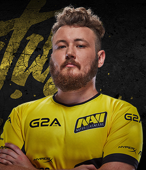

Edward - один из опытнейших игроков в Counter-Strike. Простреливает головы оппонентам уже более десяти лет. Долгое время играл за легендарную команду pro100, собранную из сливок киберспортивной тусовки Харькова. Долгое время именно pro100 находились на топовой вершине украинского киберспорта, конкурируя только с A-Gaming. Выиграл более 10 Asus Cup`ов, что является рекордным достижением для кого-либо из СНГ-геймеров. По игре часто выполняет роль "опен-фрагера", что делает его одним из самых эффективных игроков команды.
Вместе с Zeus`ом был приглашен в Virtus.Pro, в составе которого также добился немалых успехов как на постсоветском пространстве, так и на мировой арене. Обладает действительно собственным стилем игры, является примером стабильности и эффективности во время игр. Его эйс с usp на de_tuscan по праву входит в зал славы Counter-Strike, как образец пистолетного раунда, да и сам Edward по праву носит звание "Пистолетного Короля".
В жизни Ваня очень серьезный и целеустремленный человек. Любит читать классическую литературу, является ценителем настоящего искусства. С 2012 года носит бороду.
SSD: HyperX Savage SSD 240 GB
Память: HyperX Savage DDR4 GB
USB: HyperX FURY64 GB
Монитор: AOC g2460Pqu